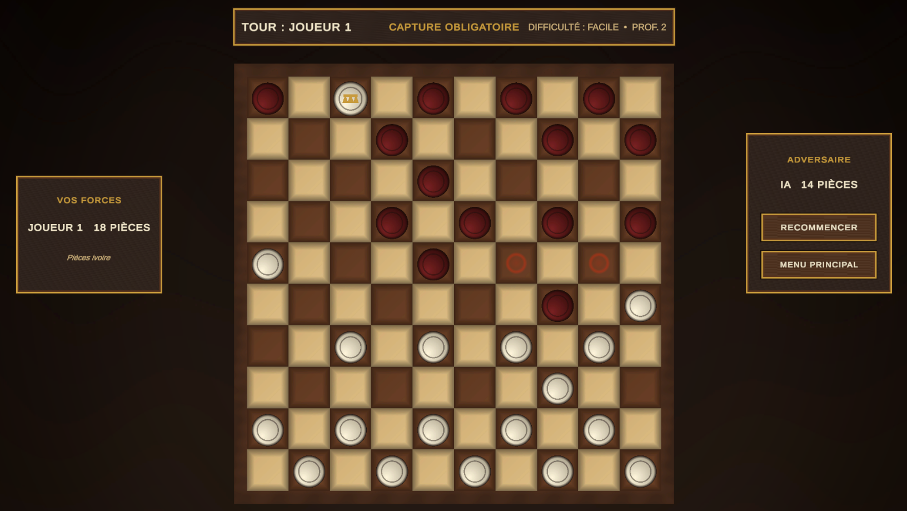
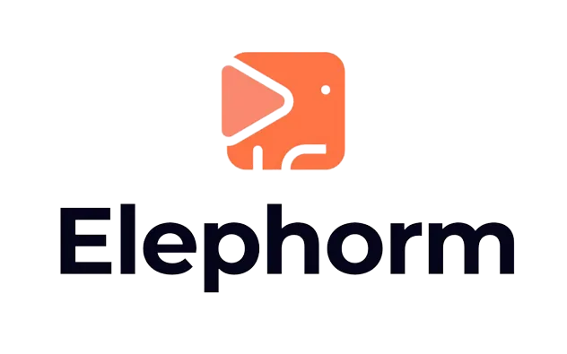

Dames - Jeu de strategie Unity
Jeu de dames avec interface moderne, adversaire Minimax a profondeur reglable. Disponible sur PC et en version Web.
Technicien systèmes & réseaux • Formateur e-learning
Technicien systèmes et réseaux, formateur e-learning et développeur. J'assure le dépannage, la maintenance et la continuité des systèmes tout en transformant mon expertise technique en formations claires et accessibles.
Infrastructure, assistance utilisateur, développement et transmission des connaissances.
Réseaux, développement, formation - trois expertises au service d'un seul objectif : faire fonctionner l'outil informatique. Technicien certifié, développeur Unity/Python et formateur sur les plus grandes plateformes en ligne, j'accompagne les projets de A à Z.
PSI Informatique - Micro-entreprise de services IT
Conception, déploiement et maintenance d'infrastructures réseau. Virtualisation, Active Directory, pare-feu UTM.
Jeux vidéo, applications interactives et outils sur mesure. Du prototype au déploiement multiplateforme.
45+ cours en ligne, 72 000+ élèves. Pédagogie par la pratique, projets concrets et supports complets.
PSI-Informatique — Estaires
ArcelorMittal — Dunkerque
AFPA — Lomme
M'Expériences – MXP Informatique — Wattignies
Guy Hoquet Immobilier — Bailleul
Microclic Informatique — Houplines
Quelques interventions techniques réalisées pour mes clients
Formateur e-learning depuis 2017, je conçois et publie des cours en ligne sur les plateformes majeures. Mon objectif : rendre l'informatique accessible à tous, des débutants aux professionnels.
Cours en ligne - Technologies & programmation

Unity - Fondamentaux du développement 3D
Cours en ligne - Technologies, programmation & réseaux
Unity, Python, C#, Bureautique
The snake game.

Le grand classique du Snake développé sous PICO-8.
Shoot'em up développé sous PICO-8.
Clone d'astéroïde développé sous Unity.
Course en 3D, première physique Unity.
Clone du jeu de mémoire Simon.
Le classique casse-briques.
Jeu classique d'arcade qui simule le tennis de table.
Faites voler l'oiseau et évitez les obstacles.
Jeu de réflexion mathématique.
Clone du jeu Pac-Man en 3D.
Jeu d'action avec gravité inversée.
Aidez la flamme à allumer son briquet.
Ma version simplifiée du jeu mythique River Raid.